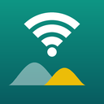

PlainWiFi privacy policy
This policy covers the PlainWiFi Android app (“PlainWiFi”), a Wi-Fi channel and signal analyzer. In short: PlainWiFi does not collect, sell or share any data. It has no account, no ads, no analytics and no tracking. The app does not even have permission to use the internet.
Information the app handles
- Wi-Fi scan results from your phone: names (SSIDs), hardware addresses (BSSIDs), channels, signal strength and security type of nearby networks.
- The signal strength, frequency and link speed of the network you are connected to.
- Room names and signal readings you record in a room walk.
- Your settings and, if you buy Pro, whether Pro is unlocked.
The latest scan and your room walks are kept in the app's private storage on your phone so they are still there next time. None of it is ever sent to the developer or anyone else.
Permissions
Location. Android only lets apps read Wi-Fi scan results if they hold precise location permission and Location is turned on, because Wi-Fi scans could in principle be used to estimate where a phone is. PlainWiFi asks for location for that reason alone. It never reads GPS or your position, never stores a location, never derives a location from the scan, and never asks for background location. It has no internet permission, so nothing could be sent anywhere.
PlainWiFi asks only after explaining why, and only when you tap “Allow and scan”. The live signal meter works without any permission. PlainWiFi never asks for background location.
Purchases
The optional one-time Pro unlock is handled by Google Play. PlainWiFi receives only a confirmation that Pro was bought; payment details stay with Google and are covered by Google's privacy policy.
Sharing
Data leaves your phone only when you export a CSV file yourself, and only to the app or place you pick.
Storage and deletion
Clearing rooms or deleting a saved walk removes it. Uninstalling the app, or clearing its storage, removes all its data. Since we never receive your data, there is nothing for us to delete on our side.
What we don't do
- We don't collect personal or sensitive information, including location.
- We don't sell or transfer user data to third parties.
- We don't show ads or use advertising IDs.
- We don't use analytics or crash-reporting services.
Children
The app is not directed at children under 13 and does not knowingly collect information from anyone.
Changes
If this policy changes, the updated version will be posted on this page with a new date.
Contact
Questions or requests: open an issue on GitHub.